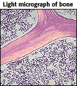
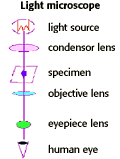
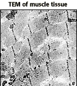
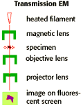
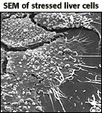
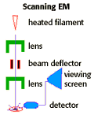

The Biology Project > Cell Biology > Studying Cells > Problems
Studying Cells Tutorial
Size and Biology
Sizes of cells, viruses, and other small things| Biology is a visually rich subject area. However, many of the most interesting biological events and structures are smaller than the unaided human eye can see. In fact, human eyes have a resolution of about 100 µm. On the chart below, notice that of all the structures listed, only the plant cell is within our resolution--just barely. |
| The light microscope has a limit of resolution of about 200 nm (0.2 µm). This limit is due to the wavelength of light (0.4-0.7 µm). Cells observed under a light microscope can be alive, or fixed and stained |
 Image courtesy of WebPath |
 |
| The Transmission Electron Microscope (TEM) has a limit of resolution of about 2nm. This is due to limitations of the lens used to focus electrons onto the sample. A TEM looks at replicas of dead cells, after fixation and heavy metal ion staining. Electrons are scattered as they pass through a thin section of the specimen, and then detected and projected onto an image on a fluorescent screen. |
 Image courtesy of WebPath |
 |
| The Scanning Electron Microscope (SEM) also has a limit of 2nm. Like the TEM, the SEM allows you to look at replicas of dead cells, after fixation and heavy metal ion staining. With this technique, electrons are reflected off the surface of the specimen. |
 Image courtesy of CIPE |
 |
The Scientific Method | Major Events
The Biology Project > Cell Biology > Studying Cells > ProblemsThe Biology
Project
Department of Biochemistry and Molecular Biophysics
University of Arizona
April 1997
Revised: August 2004
Contact the Development Team
Department of Biochemistry and Molecular Biophysics
University of Arizona
April 1997
Revised: August 2004
Contact the Development Team
http://biology.arizona.edu
All contents copyright © 1997 - 2004. All rights reserved.